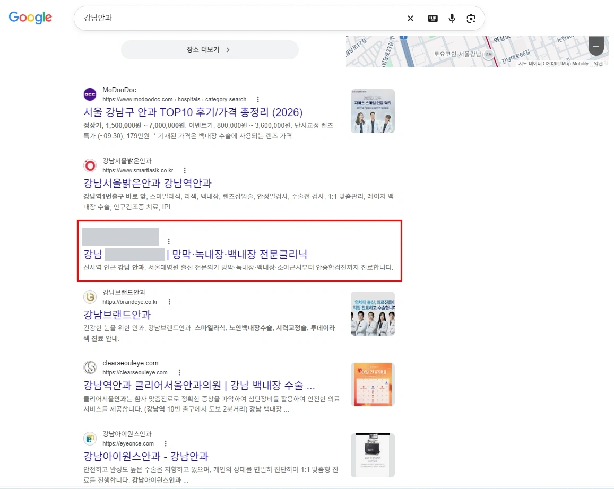

01 / URL NORMALIZATION · P.02
중복 URL 30건, 전환 순서까지
같은 문서가 두 주소로 열리는 문제를 정리하고, canonical → 영구 리다이렉트 → sitemap 순서와 제외 대상을 명시했습니다.
SEARCH PERFORMANCE · TECHNICAL SEO
검색 노출 추적에서 기술 진단, 개발 요청서까지

SEARCH & TECHNICAL SEO
검색되지 않는 원인을 구분하고, 콘텐츠와 사이트 구조의 개선 과제를 정리했습니다.
13개 키워드 개선
작업 전 미노출 또는 2~6페이지 → 1페이지
2026.09 내부 트래킹 기준 · 순위는 시점과 환경에 따라 변동
비밀유지 의무에 따라 고객명·도메인·세부 운영 전략은 비공개입니다. 위 집계는 네이버 기준이며 Google 순위 성과와 합산하지 않습니다.
TECHNICAL SEO · 의료기관 A · 개발 전달
중복 URL 30건을 포함한 사이트 이슈를 26쪽의 요청서로 정리했습니다. 현재 상태와 수정 목표, 적용 위치와 예외 조건을 명시해 개발팀에 전달했습니다.
01 / URL NORMALIZATION · P.02
같은 문서가 두 주소로 열리는 문제를 정리하고, canonical → 영구 리다이렉트 → sitemap 순서와 제외 대상을 명시했습니다.
02 / CANONICAL + OG · P.05
대표 URL·공유 제목·설명을 공용 함수로 연결하고, 목록 페이지의 페이지네이션 처리 기준을 작성했습니다.
03 / STRUCTURED DATA · P.06
MedicalClinic의 기관 정보·진료시간·채널 연결을 설계하고, 화면 정보와 일치하도록 입력 기준을 정리했습니다.
04 / SITEMAP INTEGRITY · P.08
404 주소 3건, 누락 경로 5건, lastmod 기준과 리다이렉트 적용 후 URL 교체 시점을 구분했습니다.